|
class ScatterDraw
Versatile 2D scatter graph control. It does not require GUI so it works in command line programs.
In case of GUI it can be used ScatterCtrl that is based on ScatterDraw.
ScatterDraw data is included in DataSource.
In ScatterCtrl_demo there is an overview of control possibilities.
Special characteristics are explained apart:
Overview
LegendTable
Units
Responsiveness
2D surfaces
ScatterDraw()
Initializes the class.
Callback3<String&, int, double> cbModifFormatX
If set this callback will give the String to be painted in the pop window and table data to refer X axis data.
The input values are the X axis value index and value.
Callback3<String&, int, double> cbModifFormatXGridUnits
If set this callback will give the String to be painted beside every X axis grid line.
The input values are the X axis value index and value.
Callback3<String&, int, double> cbModifFormatDeltaX
If set this callback will give the String to be painted in the pop window representing the delta between two X axis points.
The input values are the X axis value index and value.
Callback3<String&, int, double> cbModifFormatY
If set this callback will give the String to be painted in the pop window and table data to refer Y axis data.
The input values are the Y axis value index and value.
Callback3<String&, int, double> cbModifFormatYGridUnits
If set this callback will give the String to be painted beside every Y axis grid line.
The input values are the Y axis value index and value.
Callback3<String&, int, double> cbModifFormatDeltaY
If set this callback will give the String to be painted in the pop window representing the delta between two Y axis points. The input values are the Y axis value index and value.
Callback3<String&, int, double> cbModifFormatY2
If set this callback will give the String to be painted in the pop window and table data to refer secondary Y axis data.
The input values are the Y axis value index and value.
Callback3<String&, int, double> cbModifFormatY2GridUnits
If set this callback will give the String to be painted beside every secondary Y axis grid line.
The input values are the secondary Y axis value index and value.
Callback3<String&, int, double> cbModifFormatDeltaY2
If set this callback will give the String to be painted in the pop window representing the secondary delta between two Y axis points. The input values are the Y axis value index and value.
Callback1<Vector<double>&> SetGridLinesX
If set this callback will return the locations to set the X axis grid lines, and these values will be used instead of the set by SetMinUnits.
Callback1<Vector<double>&> SetGridLinesY
If set this callback will return the locations to set the Y axis grid lines, and these values will be used instead of the set by SetMinUnits.
Callback WhenZoomScroll
Callback called when the user does a zoom or a scroll.
Callback WhenSetRange
Callback called when some of the control ranges is changed.
Callback WhenSetXYMin
Callback called when scatter plot origin is changed.
Callback1<Painter&> WhenPainter
Callback called before control Paint with Painter to draw additional graphics.
Callback1<Draw&> WhenDraw
Callback called before control Paint with Draw to draw additional graphics
Callback WhenZoomToFit
Callback called after ZoomToFit() function.
Function <bool(int)> WhenRemoveSeries
Callback called just before a data series is removed. The argument is the data series to remove. If returns false, the series is not removed.
Function <bool(int, int)> WhenSwapSeries
Callback called just before two data series are swapped. The arguments are the data series to be swapped. If returns false, the series are not swapped.
ScatterDraw& SetSize(Size sz)
Sets the control size with sz. Functions like GetImage() will return a bitmap of sz size.
virtual Size GetSize() const
Returns the control size. Functions like GetImage() will return a bitmap of sz size.
ScatterDraw& Responsive(bool responsive = true, double factor = 1)
If responsive is true, ScatterDraw size will not affect significatively to control look.
Normal factor is 1. If higher, fonts, margins and lines scale will be higher with control scale..
bool IsResponsive()
Returns true if responsiveness is set.
double GetResponsivenessFactor()
Returns responsiveness factor.
double GetPlotScaleX()
Returns responsiveness scale in X axis.
double GetPlotScaleY()
Returns responsiveness scale in Y axis
double GetPlotScaleAvg()
Returns average responsiveness scale
ScatterDraw& SetColor(const Color& color)
Sets color .as graph background color.
ScatterDraw& SetTitle(const String& title)
Sets title as graph title.
const String& GetTitle()
Returns graph title.
ScatterDraw& SetTitleFont(const Font& fontTitle)
Sets fontTitle as title font.
ScatterDraw& SetTitleColor(const Color& colorTitle)
Sets colorTitle as title text color.
Upp::Color& GetTitleColor()
Returns the title color.
Font& GetTitleFont()
Returns the title font.
void SetLabels(const String& xLabel, const String& yLabel, const String& yLabel2 = "")
Sets the labels of the horizontal axis (xLabel), vertical axis (yLabel) and secondary vertical axis (yLabel2).
ScatterDraw& SetLabelX(const String& xLabel)
Sets xLabel as the label of the horizontal axis.
const String &GetLabelX()
Returns the label of the horizontal axis.
ScatterDraw& SetLabelY(const String& yLabel)
Sets yLabel as the label of the vertical axis.
const String &GetLabelY()
Returns the label of the vertical axis.
ScatterDraw& SetLabelY2(const String& yLabel)
Sets yLabel as the label of the secondary vertical axis.
const String &GetLabelY2()
Returns the label of the secondary vertical axis.
ScatterDraw& SetLabelsFont(const Font& fontLabels)
Sets fontLabels as the labels font.
Font GetLabelsFont()
Returns labels font.
ScatterDraw& SetLabelsColor(const Color& colorLabels)
Sets colorLabels as the color of the labels.
Upp::Color GetLabelsColor()
Returns labels color.
ScatterDraw& SetPlotAreaMargin(int hLeft, int hRight, int vTop, int vBottom)
Sets the left(hLeft), right (hRight), top(vTop) and bottom (vBottom) margins of the scatter plots inside ScatterDraw control.
ScatterDraw& SetPlotAreaLeftMargin(int margin)
Sets the left margin of scatter plot inside ScatterDraw control.
int GetPlotAreaLeftMargin()
Returns the plot area left margin.
ScatterDraw& SetPlotAreaRightMargin(int margin)
Sets the right margin of scatter plot inside ScatterDraw control.
int GetPlotAreaRightMargin()
Returns the plot area right margin.
ScatterDraw& SetPlotAreaTopMargin(int margin)
Sets the top margin of scatter plot inside ScatterDraw control.
int GetPlotAreaTopMargin()
Returns the plot area top margin.
ScatterDraw& SetPlotAreaBottomMargin(int margin)
Sets the bottom margin of scatter plot inside ScatterDraw control.
int GetPlotAreaBottomMargin()
Returns the plot area bottom margin.
ScatterDraw& SetPlotAreaColor(const Color& p_a_color)
Sets p_a_color as the plot area background color.
Color& GetPlotAreaColor()
Returns the plot area background color.
ScatterDraw& SetAxisColor(const Color& axis_color)
Sets axis_color as the color of the axis.
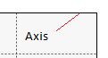
ScatterDraw& SetAxisWidth(int axis_width)
Sets axis_width as the width of the axis in pixels.
ScatterDraw& SetGridColor(const Color& grid_color)
Sets grid_color as the color of the grid.
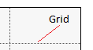
Color &GetGridColor()
Returns grid color.
ScatterDraw& SetGridWidth(double grid_width)
Sets grid_width as the width of the grid.
double GetGridWidth()
Returns the grid width.
ScatterDraw& SetGridDash(const char *dash)
Sets dash as the grid dash style.
const char *GetGridDash()
Gets grid dash style.
ScatterDraw& SetGridWidth(int grid_width)
Sets grid_width as the width of the grid in pixels.
ScatterDraw& ShowVGrid(bool show)
If show is true the vertical grid is shown
ScatterDraw& ShowHGrid(bool show)
If show is true the horizontal grid is shown
ScatterDraw& ShowLegend(bool show = true)
If show is true graphs name, color and style will be shown.
Here there are described legend details.
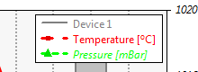
bool GetShowLegend()
Returns true if legend is shown.
Here there are described legend details.
ScatterDraw& SetLegendPos(const Point &pos)
Sets the coordinates (pos) of the legend table corner relative to the plot corner.
Here there are described legend details.
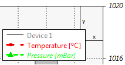
ScatterDraw& SetLegendPosX(int x)
Sets the x coordinate.of the legend table corner relative to the plot corner.
ScatterDraw& SetLegendPosY(int y)
Sets the y coordinate.of the legend table corner relative to the plot corner.
Point& GetLegendPos()
Returns the pos of the legend corner relative to the plot corner.
ScatterDraw& SetLegendFont(const Font &fnt)
Sets fnt as the legend font.
Font &GetLegendFont()
Gets legend font.
ScatterDraw& SetLegendNumCols(int num)
Sets the number num of legend columns.
3 columns
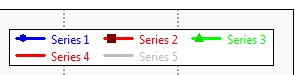
2 columns
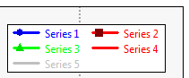
int GetLegendNumCols()
Returns the number of legend columns.
ScatterDraw& SetLegendRowSpacing(int num)
Sets the height (num) between legend rows.
num = 0
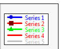
num = 5
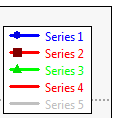
int GetLegendRowSpacing()
Returns the height between legend rows.
enum LEGEND_POS LEGEND_TOP
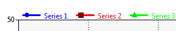
enum LEGEND_POS LEGEND_ANCHOR_LEFT_TOP
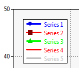
enum LEGEND_POS LEGEND_ANCHOR_RIGHT_TOP
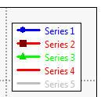
enum LEGEND_POS LEGEND_ANCHOR_LEFT_BOTTOM
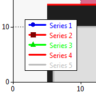
enum LEGEND_POS LEGEND_ANCHOR_RIGHT_BOTTOM
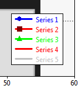
ScatterDraw& SetLegendAnchor(LEGEND_POS anchor)
Sets with anchor the legend table position:
LEGEND_TOP,
LEGEND_ANCHOR_LEFT_TOP,
LEGEND_ANCHOR_RIGHT_TOP,
LEGEND_ANCHOR_LEFT_BOTTOM,
LEGEND_ANCHOR_RIGHT_BOTTOM
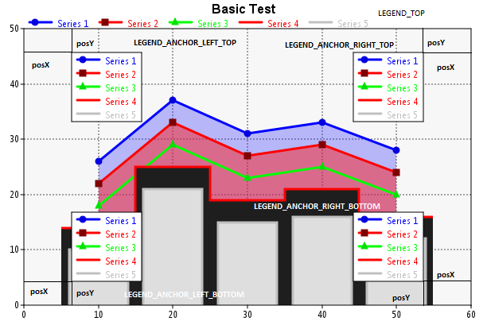
LEGEND_POS GetLegendAnchor()
Returns the legend table position.
ScatterDraw& SetLegendFillColor(const Color &color)
Sets with color the legend background color.
ScatterDraw& SetLegendBorderColor(const Color &color)
Sets with color the legend border color.
Color& GetLegendFillColor()
Returns the legend background color
Color& GetLegendBorderColor()
Returns the legend border color.
ScatterDraw& SetMode(int _mode = MD_ANTIALIASED)
Sets the drawing mode. Values are:
Drawn with Draw
MD_DRAW
Drawn with PAINTER
MD_ANTIALIASED = MODE_ANTIALIASED,
MD_NOAA = MODE_NOAA,
MD_SUBPIXEL = MODE_SUBPIXEL
int GetMode()
Returns the drawing mode as documented in SetMode().
ScatterDraw& ZoomToFit(bool horizontal, bool vertical = false, double factor = 0)
Rescales the x axis if horizontal is true and y axis if vertical is true to show all graphs data.on the control. factor indicates the fit factor (0 fills the control) .
void Zoom(double scale, bool hor = true, bool ver = true)
Zooms plots by scale factor horizontally if hor is true and vertically if ver is true.
void Scroll(double factorX, double factorY)
Scrolls plots horizontally by factorX and vertically by factor factorY.
ScatterDraw& LinkedWith(ScatterDraw& ctrl)
Links zoom and scroll events with ctrl.
All zoom and scroll in either of both controls will affect the other control.
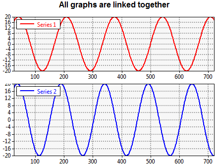
void Unlinked()
Unlinks series.
int GetPlotWidth()
Returns in pixels the width of the plot area.
int GetPlotHeight()
Returns in pixels the height of the plot area.
double GetPosX(double x)
Returns in pixels the position of the real dimension x.
double GetPosY(double y)
Returns in pixels the position of the real dimension y.
double GetPosY2(double y)
Returns in pixels the position of the real dimension of the secondary axis y.
ScatterDraw& AddSurf(DataSourceSurf &surf)
Adds the 2D surface surf.
ScatterDraw& SetSurfMinZ(double val)
Sets val as the minimum 2D surface Z value.
double GetSurfMinZ() const
Returns the minimum 2D surface Z value.
ScatterDraw& SetSurfMaxZ(double val)
Sets val as the maximum 2D surface Z value.
double GetSurfMaxZ() const
Returns the maximum 2D surface Z value.
ScatterDraw& ZoomToFitZ()
Calculates the minimum and maximum 2D surface Z values and sets them as minimum and maximum values to be plotted.
ScatterDraw& ShowRainbowPalette(bool show = true)
If show is true 2D surface rainbow color palette will be shown.
bool GetShowRainbowPalette()
Returns true if 2D surface rainbow color palette is shown.
ScatterDraw& SetRainbowPalettePos(const Point &p)
Sets p as the position of 2D surface rainbow color palette.
Point& GetRainbowPalettePos()
Returns the 2D surface rainbow color palette position.
ScatterDraw& SetRainbowPaletteSize(const Size &sz)
Sets sz as the Size of 2D surface rainbow color palette.
Size& GetRainbowPaletteSize()
Returns the 2D surface rainbow color palette size.
ScatterDraw& SetDefaultCSVSeparator(String sep)
Sets sep as the default .csv files field separator.
String GetDefaultCSVSeparator()
Gets the the default .csv files field separator.
ScatterDraw &SetZoomStyleX(ZoomStyle style = TO_CENTER)
Sets the X zoom style. Valid values are:
TO_CENTER: Zoom is centered to the control center.
FROM_BASE: Zoom is centered to the X origin.
ScatterDraw &SetZoomStyleY(ZoomStyle style = TO_CENTER)
Sets the Y zoom style. Valid values are:
TO_CENTER: Zoom is centered to the control center.
FROM_BASE: Zoom is centered to the Y origin.
ScatterDraw& SetRange(double rx, double ry = Null, double ry2 = Null)
Sets the horizontal (rx), vertical (ry) and secondary vertical (ry2) axis ranges.
Range is the visible with of the plot in series units (not in pixels).
double GetXRange()const
Returns the x axis range.
double GetYRange()const
Returns the y axis range.
double GetY2Range()const
Returns the secondary y axis range.
ScatterDraw &SetMajorUnits(double ux, double uy, double uy2)
Sets the horizontal (ux), vertical (uy) or secondary vertical (uy2) distance between grid lines.
double GetMajorUnitsX()
Returns the distance between grid lines in X axis.
double GetMajorUnitsY()
Returns the distance between grid lines in Y axis.
double GetMajorUnitsY2()
Returns the distance between grid lines in secondary Y axis.
ScatterDraw& SetMinUnits(double ux, double uy)
Sets with ux and uy the first X and Y axis grid lines location in real units from the lower left corner. If either ux or uy is not visible, it ensures that values obtained adding or substracting SetMajorUnits() values will be visible.
If SetGridLinesX or SetGridLinesY callback is set, the values of X or Y axis respectively will not be used.
double GetXMinUnit () const
Returns the first X axis grid line location.
double GetYMinUnit () const
Returns the first Y axis grid line location.
double GetYMinUnit2 () const
Returns the first secondary Y axis grid line location-
ScatterDraw& SetXYMin(double xmin,double ymin,double ymin2 = 0)
Sets with xmin, ymin and ymin2 the X, Y and secondary Y axis origin.
double GetXMin () const
Returns the X axis origin.
double GetYMin () const
Returns the Y axis origin.
double GetYMin2 () const
Returns the secondary Y axis origin.
double GetY2Min () const
Returns the secondary Y axis origin.
double GetXMax() const
Returns the X axis end.
double GetYMax() const
Returns the Y axis end.
double GetY2Max() const
Returns the secondary Y axis end.
ScatterDraw &AddSeries(double *yData, int numData, double x0 = 0, double deltaX = 1)
Adds a new series stored in yData C array with numData where the yData[0] X value is x0 and the horizontal distance between yData values is deltaX.
yData has to be stored in a permanent location during ScatterDraw life to avoid memory problems.
ScatterDraw &AddSeries(double *xData, double *yData, int numData)
Adds a new series stored in xData and yData C arrays with numData.
xData and yData has to be stored in a permanent location during ScatterDraw life to avoid memory problems.
ScatterDraw &AddSeries(Vector<double> &xData, Vector<double> &yData)
Adds a new series stored in xData and yData Vector<double>.
xData and yData has to be stored in a permanent location during ScatterDraw life to avoid memory problems.
ScatterDraw &AddSeries(Array<double> &xData, Array<double> &yData)
Adds a new series stored in xData and yData Array<double>.
xData and yData has to be stored in a permanent location during ScatterDraw life to avoid memory problems.
ScatterDraw &AddSeries(Vector<Pointf> &points)
Adds a new series stored in points Vector<Pointf>.
points has to be stored in a permanent location during ScatterDraw life to avoid memory problems.
ScatterDraw &AddSeries(Array<Pointf> &points)
Adds a new series stored in points Array<Pointf>.
points has to be stored in a permanent location during ScatterDraw life to avoid memory problems.
ScatterDraw &AddSeries(Vector<Vector <double> > &data)
Adds a new series stored in data .
ScatterDraw &Opacity(double opacity = 1)
Sets the series opacity .from 1 (opaque) to 0 (transparent/invisible).
ScatterDraw &Legend(const String legend)
Sets the series legend.
ScatterDraw& Legend(int index, const String legend)
Sets the legend for index series.
const String& GetLegend(int index)
Returns the legend for index series.
ScatterDraw &Units(const String unitsY, const String unitsX = "")
Sets the series units for Y axis (unitsY) and X axis (unitsX).
ScatterDraw &Units(int index, const String unitsY, const String unitsX = "")
Sets the index series units for Y axis (unitsY) and X axis (unitsX).
const String GetUnitsX(int index)
Returns the X axis units for index series.
const String GetUnitsY(int index)
Returns the Y axis units for index series.
ScatterDraw &LegendLine(bool b = true)
Draw line in series legend even if the series does not plot lines (NoPlot).
bool IsValid(int index) const
Returns true if index is between 0 and GetCount()-1..
ScatterDraw& SetDrawXReticle(bool set = true)
If set is true the small lines and texts beside every X grid line are shown.
ScatterDraw& SetDrawYReticle(bool set = true)
If set is true the small lines and texts to the left of every Y grid line are shown.
ScatterDraw& SetDrawY2Reticle(bool set = true)
If set is true the small lines and texts to the right of every Y grid line are shown.
bool GetDrawXReticle()
Returns true if the the small lines and texts beside every X grid line are shown.
bool GetDrawYReticle()
Returns true if the the small lines and texts to the left of every Y grid line are shown.
bool GetDrawY2Reticle()
Returns true if the the small lines and texts to the right of every Y grid line are shown.
ScatterDraw &SetReticleFont(const Font &fnt)
Sets fnt as reticle font.
Font &GetReticleFont()
Gets reticle font.
ScatterDraw &SetReticleColor(const Color &col)
Sets col as reticle color.
Color &GetReticleColor()
Gets reticle color
void SetDataPrimaryY(int index, bool primary = true)
If primary is true, index series is considered to be a primary series so it uses the left vertical axis. If false it uses the right vertical axis. In this case right vertical grid is activated.
ScatterDraw &SetDataPrimaryY(bool primary)
If primary is true, last added series is considered to be a primary series so it uses the left vertical axis.
If false it uses the right vertical axis.
void SetDataSecondaryY(int index, bool secondary)
Opposed to SetDataPrimaryY() if secondary is true, index series is considered to be a secondary series so it uses the right vertical axis. In this case right vertical grid is activated.
If false it uses the left vertical axis.
ScatterDraw &SetDataSecondaryY(bool secondary)
Opposed to SetDataPrimaryY() if secondary is true, last added series is considered to be a secondary series so it uses the right vertical axis. In this case right vertical grid is activated.
If false it uses the left vertical axis.
bool IsDataPrimaryY(int index)
Returns true if index series is primary..
void SetSequentialX(int index, bool sequential = true)
If sequential is true, index series is considered to be sequential so all data points are ordered following the X axis.
ScatterDraw &SetSequentialX(bool sequential = true)
If sequential is true the last added series is considered to be sequential so all data points are ordered following the X axis.
ScatterDraw &SetSequentialXAll(bool sequential = true)
If sequential is true all series are considered to be sequential so all data points are ordered following the X axis.
bool GetSequentialX(int index)
Returns true if index data series is considered to be sequential so all data points are ordered following the X axis.
bool GetSequentialX()
Returns true if the last added series is considered to be sequential so all data points are ordered following the X axis.
void Show(int index, bool show = true)
If show is true it sets the opacity of index data series to 1. If false, the opacity will be set to 0.
bool IsVisible(int index)
Returns true if index data series opacity is greater than 0.
ScatterDraw &ShowAll(bool show = true)
If show is true it sets the opacity of all series to 1. If false, the opacity will be set to 0.
bool RemoveSeries(int index)
Remove index data series from control. It does not delete the series data.
ScatterDraw &RemoveAllSeries()
Remove all data series from control. It does not delete the series data.
bool SwapSeries(int i1, int i2)
Swaps the series i1 with i2.
Image GetImage()
Returns the scatter plot as an Image.
ScatterDraw& Id(int id)
Sets the id of the last added data series.
ScatterDraw& Id(int index, int id)
Sets the id if index data series.
int GetId(int index)
Returns the id of index data series.
Drawing GetDrawing()
Returns the control Drawing.
double GetXByPoint(double x)
Returns the X axis value of pixel x in data set units.
double GetYByPoint(double y)
Returns theY axis value of pixel y in data set units.
double GetY2ByPoint(double y)
Returns the secondary Y axis value of pixel y in data set units.
double GetXPointByValue(double x)
Returns the X axis pixel value of x in data set units.
double GetYPointByValue(double y)
Returns the Y axis pixel value of y in data set units.
void SaveAsMetafile(const char* file) const
Windows
Saves the control as a windows metafile in file.
ScatterDraw& SetMinZoom(double x, double y = -1)
Sets x and y as the minimum visible range. If y is -1, only x zoom is considered.
Equal to SetMinRange().
ScatterDraw& SetMaxZoom(double x, double y = -1)
Sets x and y as the maximum visible range. If y is -1, only x zoom is considered.
Equal to SetMaxRange().
ScatterDraw& SetMinRange(double x, double y = -1)
Sets x and y as the minimum visible range. If y is -1, only x zoom is considered.
ScatterDraw& SetMaxRange(double x, double y = -1)
Sets x and y as the maximum visible range. If y is -1, only x zoom is considered.
ScatterDraw& SetFastViewX(bool set = true)
If set is true, only one point per screen pixel will be drawn. The Y value of this point will be the average of all data points between two pixels.
In case of big datasets and zoom in with big detail, this option can accelerate strongly the control refresh.
bool GetFastViewX()
Returns true if FastViewX has been set.
int GetCount()
Returns the number of series loaded.
bool IsEmpty()
Returns true if there are no series.
ScatterDraw &NoPlot()
Set to avoid showing the series. However the mar can be shown.
ScatterDraw &Stacked(bool stacked = true)
If stacked is true it is considered that all series are stacked.
ScatterDraw &NoMark()
Set to avoid showing mark in series. However the series can be shown.
ScatterDraw &Stroke(int index, double thickness, Color color)
Sets index series thickness and color.
ScatterDraw &Stroke(double thickness, Color color = Null)
Sets the series line thickness and color.
void GetStroke(int index, double &thickness, Color &color)
Gets index series thickness and color.
|

{kind=link}
{kind=link}
{kind=link}
{kind=link}
{kind=link}
{kind=link}
{kind=link}
{kind=link}
{kind=link}
{kind=link}
{kind=link}
{kind=link}
{kind=link}
{kind=link}
{kind=link}
{kind=link}